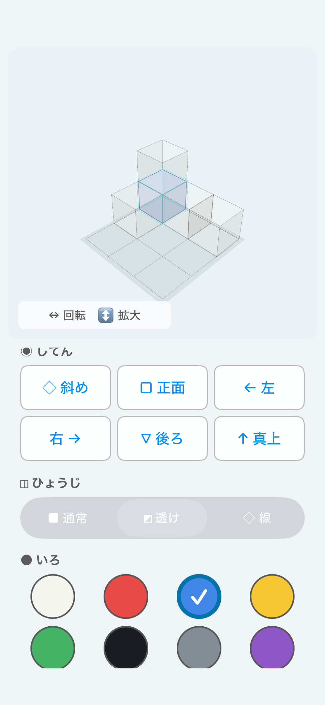
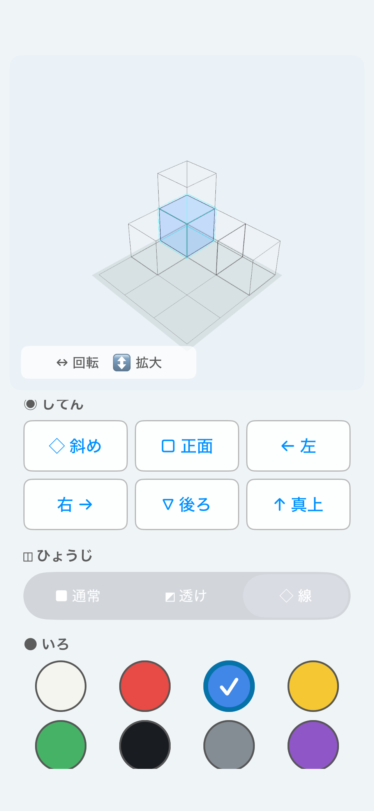
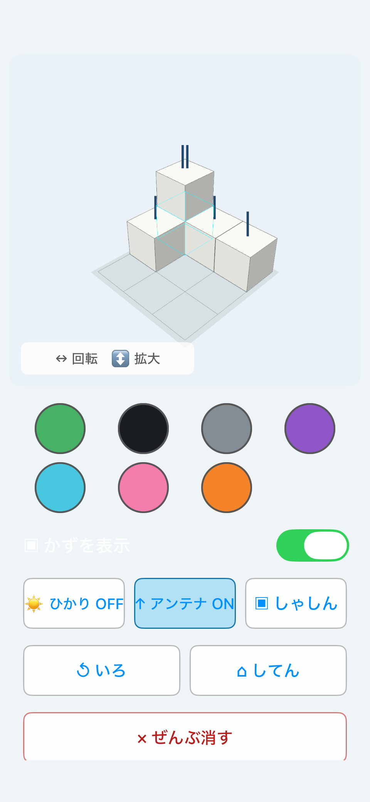
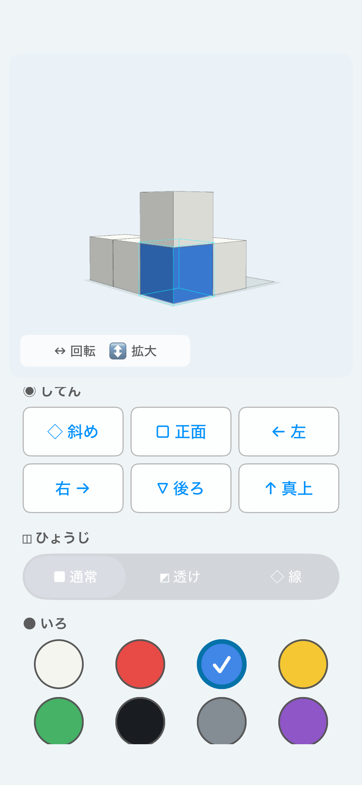
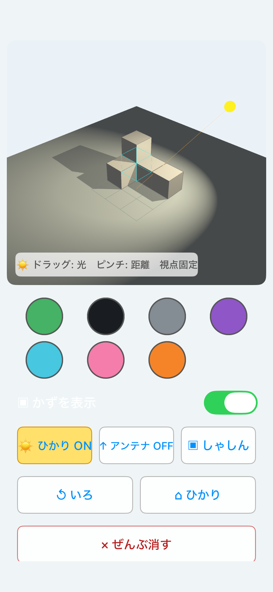

Think first, then build and check
Japanese elementary school entrance examinations for some private and national schools may include block-counting and spatial-view problems.
MieTsumi does not automatically provide answers to these problems.
Instead, it supports spatial reasoning practice by letting learners build the same model as a problem and move it to check how the shape works.
Count the blocks
Block-counting problems may require you to account for blocks hidden beneath or behind other blocks, not only the blocks visible in an illustration.
First, build the same model and examine it from an angled view. Then rotate it or switch to Transparent View and Wireframe View to check the hidden areas.


Count with Antenna Markers
Antenna Markers are a visual aid for counting the blocks in each vertical stack.
Short vertical lines appear above the top block of each stack. The number of lines matches the number of blocks in that vertical stack.
A stack of two blocks has two lines, while a single block has one. Because children can count the lines one by one without reading numerals, the feature can also be used by young learners who are still becoming familiar with numbers.

How to count with Antenna Markers
- Build the same model as the problem.
- Turn on Antenna Markers.
- Count the vertical lines above each stack.
- Add the lines from all stacks to work out the total.
- Use Transparent View or Wireframe View to check when needed.
Antenna Markers are not blocks. Do not include the marker lines themselves in the block count.
Think about front, side, back, and top views
Some spatial-view problems ask what the same 3D model looks like from the front, back, left, right, or top.
MieTsumi’s view buttons let you examine the model directly from each of these directions.
After examining a view, try drawing it on paper without looking at the screen. This can help learners practice changing viewing directions mentally.


Explore light and shadow problems
Light and shadow problems ask where light is coming from and which direction the shadow will extend.
Turn on “Light and Shadow” in MieTsumi to see the light position and the shadows cast by the blocks. Move the light and compare how the direction of the shadows changes.
In general, a shadow extends away from the light source.
- Light on the right → shadow extends to the left
- Light on the left → shadow extends to the right
- Light in front → shadow extends toward the back

A note about learning
MieTsumi is a supporting tool for checking how 3D shapes look and how spatial relationships work.
When working on a problem, we recommend thinking independently first, then building the model in MieTsumi to check the result.